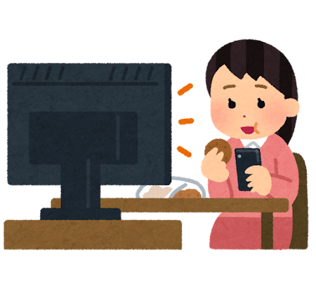
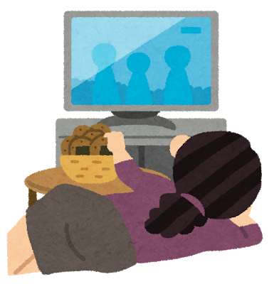
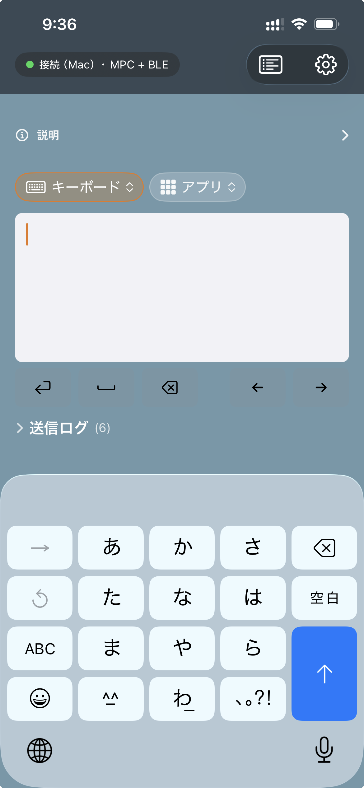
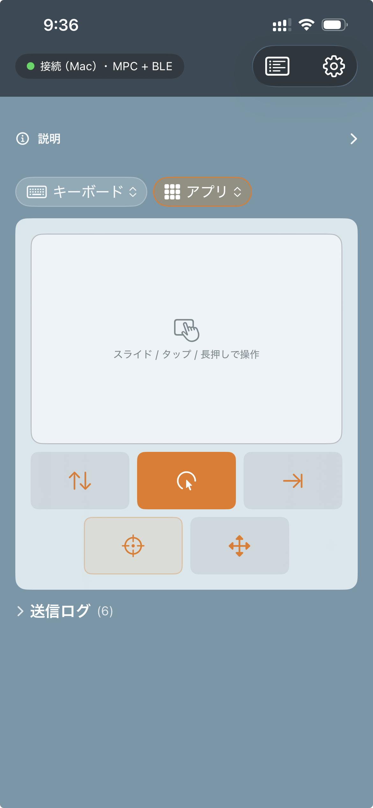
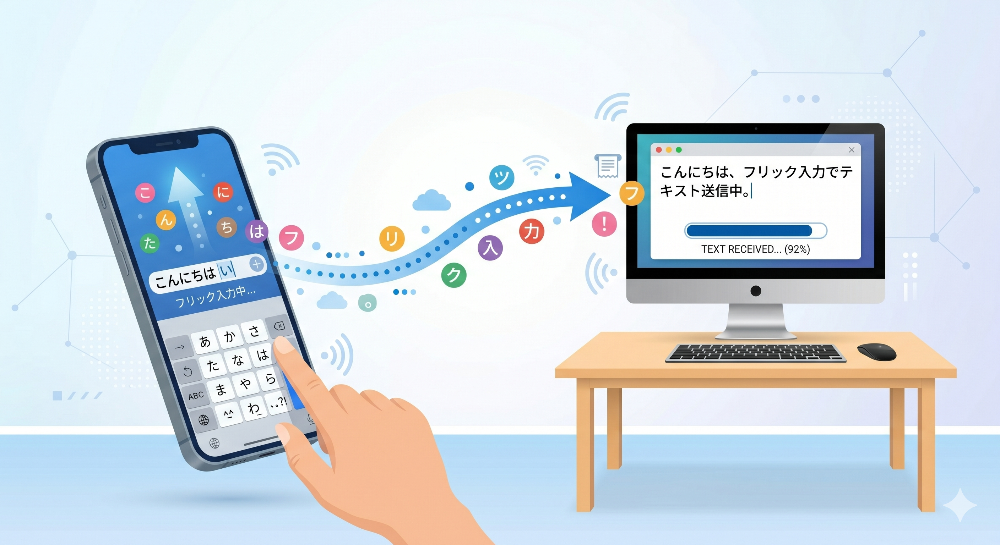
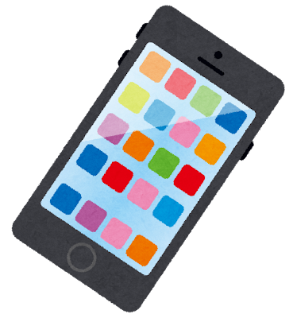
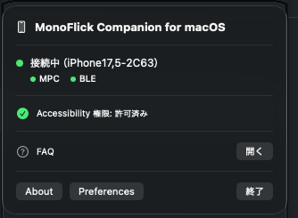
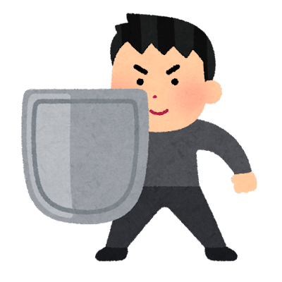

右手/左手がふさがる時も、片手しか動かせない時も。iPhone 1 つで Mac への文字入力とポインタ操作を完結。 コーヒーを持っていても、横になっていても、片手のみでも、PC を諦めなくていい。
右手がふさがる時も、片手しか動かせない時も。PC への入力を諦めなくていい。

コーヒーやお弁当を持ったまま、PC でメッセージ返信や検索ワード入力。
障がいや怪我などで片手しか使えなくても、文字入力もポインタ操作も iPhone 片手で完結。アクセシビリティを重視した設計です。

ソファやベッドで横向き姿勢のまま、PC の入力欄を埋める。
iPhone を「片手オンリーで完結する PC 入力デバイス」に変える 4 つの機能。

親指 1 本で打てるよう調整された日本語フリックキーボード。

iPhone 全面をトラックパッドにして Mac のポインタを片手で操作。タップ・ドラッグ・スクロールに対応。

入力した文字や任意のキーバインドを アプリを通じて、Mac のフォアグラウンドアプリへ即時送信。

Mac 上の任意アプリを iPhone からワンタップでフォアグラウンドに呼び出す。

2 つの経路が並走し、先に確立した方が active になります。BLEは有料ですが、Wi-Fiだけでも通信に問題はありません。

ご利用には iPhone と Mac の 両方 にアプリをインストールする必要があります。
MonoFlick lets you type into the foreground app on your Mac using only your left hand on an iPhone — for moments when your right hand is occupied. End-to-end encrypted via Wi-Fi or Bluetooth. No analytics, no advertising IDs, no servers. See the Privacy Policy for details.